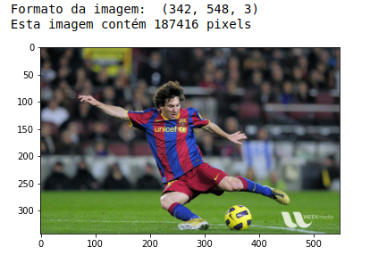
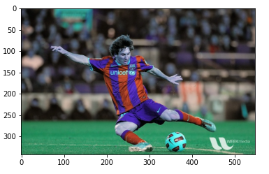
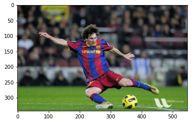
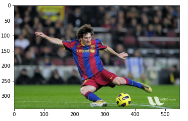
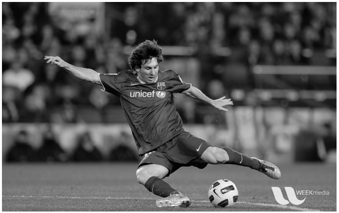
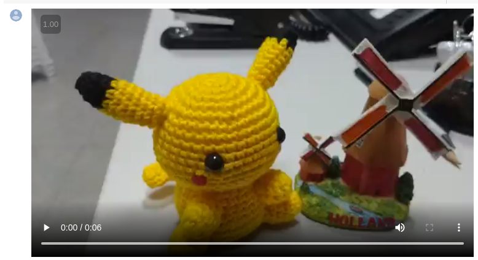

Laboratório 2
Parte 1 - Processamento de Imagem Na primeira parte deste laborátório, a equipe executou os códigos disponíveis neste Jupyter Notebook.
Nessa primeira célula é executada a importação dos arquivos Jupyter na pasta do repositório.
O bloco de imagem com o ex-jogador do Barcelona Lionel Messi é composta por 6 imagens diferentes a primeira aberta com o openCV e a segunda imagem com o matplotlib. A diferença das cores é devida a troca de cores com que é lida pelo OpenCV (BGR).




As próximas tres imagens são escala de cinza do jogador Lionel Messi e a última é a função de resize para aumentar a resolução.

Por último, a equipe importou um vídeo disponibilizado previamente.
Parte 2 - Captura de Imagem
Na segunda parte deste laborátório, a equipe executou os códigos disponíveis
neste
Jupyter Notebook.
Cada integrante do grupo rodou o algoritmo para fazer uma captura de imagem utilizando a webcam. A imagem exibida abaixo foi montada a partir das imagens capturadas.
Abaixo, uma montagem de cada avatar escolhido pelos integrantes: Dimitri (Ronaldinho), William (Morty) e Matheus (Kirito).

Parte 3 - Captura de Vídeo
Na terceira parte deste laborátório, a equipe executou os códigos disponíveis
neste
Jupyter Notebook.
Os integrantes William e Matheus capturaram os vídeos abaixo utilizando o código mencionado.
Por fim, os vídeos foram renderizados novamente utilizando um script do opencv, porém com outros valores de resolução inferiores, conforme apresentados abaixo.
Na segunda parte deste laborátório, a equipe executou os códigos disponíveis
neste
Jupyter Notebook.
Cada integrante do grupo rodou o algoritmo para fazer uma captura de imagem utilizando a webcam. A imagem exibida abaixo foi montada a partir das imagens capturadas.
Abaixo, uma montagem de cada avatar escolhido pelos integrantes: Dimitri (Ronaldinho), William (Morty) e Matheus (Kirito).

Na terceira parte deste laborátório, a equipe executou os códigos disponíveis
neste
Jupyter Notebook.
Os integrantes William e Matheus capturaram os vídeos abaixo utilizando o código mencionado.
Por fim, os vídeos foram renderizados novamente utilizando um script do opencv, porém com outros valores de resolução inferiores, conforme apresentados abaixo.